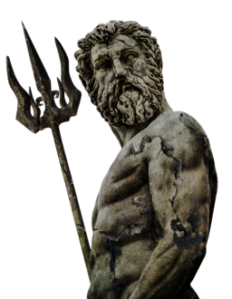

Poseidón
Poseidón o Posidón (en griego antiguo, Ποσειδῶν; en griego moderno, Ποσειδώνας; en latín, Posidon) es el dios de los mares y de los terremotos en la mitología griega.


Poseidón o Posidón (en griego antiguo, Ποσειδῶν; en griego moderno, Ποσειδώνας; en latín, Posidon) es el dios de los mares y de los terremotos en la mitología griega.
Poseidón era un importante dios municipal de varias ciudades: en Atenas, era el segundo en importancia por detrás solo de Atenea, mientras en Corinto y en muchas ciudades de la Magna Grecia era el dios jefe de la polis.
Como Dioniso, que enfervorizaba a las Ménades, Poseidón también provocaba ciertas formas de perturbación mental. Un texto hipocrático, "Sobre la enfermedad sagrada", afirma que era considerado culpable de ciertos tipos de epilepsia.